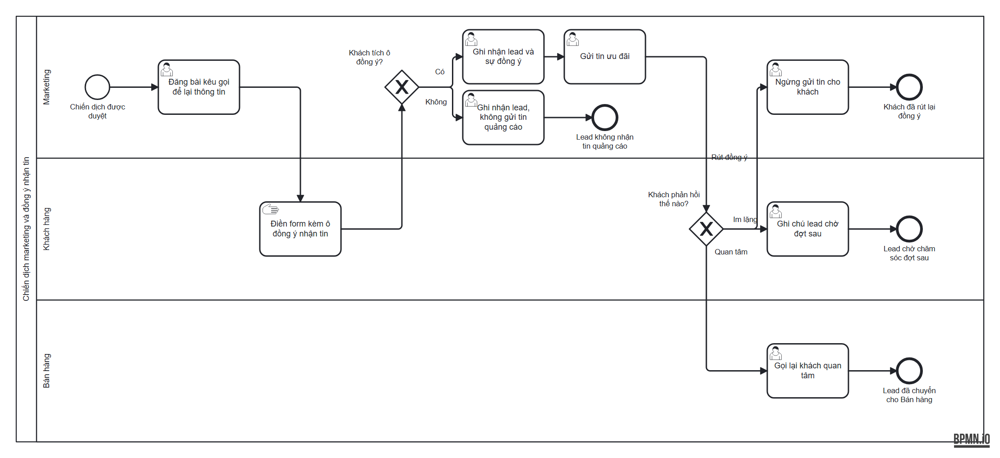

Marketing và đồng ý nhận tin
Tự động hóa marketing theo giáo trình (ba thành phần, lợi ích, chi phí, chiến dịch), quyền riêng tư khi dùng dữ liệu khách, và cách quy trình "Chiến dịch marketing và đồng ý nhận tin" của Biti's đặt cổng đồng ý trước bước gửi tin.
- Phân biệt được ba thành phần của marketing automation (phần mềm, quy tắc, thuật toán) và chỉ ra lợi ích, chi phí của nó
- Vận dụng được các nguyên tắc quyền riêng tư của giáo trình để quyết định có được gửi tin quảng cáo cho một khách hay không
- Chỉ ra được nút nào của sơ đồ marketing trong đồ án ứng với thành phần nào của MA, và bốn lead thử đi qua bốn nhánh nào
- Giải thích được vì sao nhóm ghi sự đồng ý bằng ghi chú, bằng chứng nào cho thấy khách không đồng ý thì không bị gửi tin, và hạn chế còn lại
1Kiến thức tổng quát: tự động hóa marketing và quyền riêng tư
Marketing automation (MA – tự động hóa marketing) là gì
Giáo trình định nghĩa: MA là việc dùng phần mềm để áp dụng các quy tắc và thuật toán, nhờ đó các hoạt động marketing chạy với rất ít hoặc không cần người can thiệp.
Nói đời thường: thay vì một nhân viên ngồi chọn từng khách để gửi từng thư, công ty viết sẵn "gặp khách như thế nào thì làm gì", rồi để máy làm lặp lại. Người chỉ quay lại ở đầu (đặt luật) và ở cuối (xem kết quả, rút kinh nghiệm).
Ba thành phần của MA
| Thành phần | Giáo trình nói gì (diễn đạt lại) | Ví dụ ngoài đồ án: tiệm sách online |
|---|---|---|
| Phần mềm (software) | Công cụ gom các nguồn lực, hệ thống, quy trình lại với nhau và cho phép thu thập, phân tích dữ liệu. Phần mềm CRM giữ vai trò trung tâm. | Hệ thống CRM lưu 2.000 khách và lịch sử mua. |
| Quy tắc (rules) | Những điều công ty phải nói ra được: nhắm khách nào, đưa ưu đãi gì, vào lúc nào, theo trình tự nào. Trình tự thường là "nếu... thì...": khách không phản hồi ưu đãi một thì đưa ưu đãi hai. | "Khách mua từ 500.000 đ trong 6 tháng thì nhận thư ưu đãi A; ai không mở thư sau 3 ngày thì nhận thư B." |
| Thuật toán (algorithms) | Các bước được mã hóa trong hệ thống để thực thi luật. Đã rõ từng bước thì lặp lại được, không cần người can thiệp trừ lúc đánh giá sau chiến dịch. | Mỗi sáng, hệ thống tự quét danh sách, chọn khách khớp luật, gửi thư, ghi lại ai đã mở. |
Lợi ích và chi phí
| Lợi ích (slide 5) | Chi phí (slide 6) |
|---|---|
| Marketing hiệu quả hơn, nhắm đúng nhu cầu hơn | Chi phí triển khai: giấy phép (thường tính theo số người dùng), chỉnh lại quy trình, chuyển dữ liệu cũ, tích hợp hệ thống |
| Trải nghiệm khách (CX – customer experience) và mức độ gắn bó tốt hơn | Chi phí bảo trì: người hỗ trợ, giữ dữ liệu đúng và đủ |
| Chi tiêu marketing có thể giải trình được (đo được kết quả) | Rủi ro bảo vệ dữ liệu: hệ thống bị tấn công thì lộ thông tin khách |
| Mở rộng quy mô hoạt động; quản lý thông tin hiệu quả hơn; hiểu biết tốt hơn | Rủi ro thương hiệu: quyết định do thuật toán đưa ra vẫn là trách nhiệm của quản lý |
Chiến dịch marketing và các kênh
Giáo trình nói quản lý chiến dịch (campaign management) gồm bảy phần: quy trình công việc (workflow), phân khúc và nhắm đối tượng, cá nhân hóa, thực thi, đo lường, mô hình hóa, báo cáo (Chương 7, slide 7; tr. 169–170). Kênh gồm thư tay (direct mail), email, tiếp thị qua điện thoại, mạng xã hội, quảng cáo số, sự kiện... (slide 8). Với email, giáo trình nêu lý do được ưa chuộng: rẻ, dễ dùng, gửi 10.000 thư không đắt hơn bao nhiêu so với gửi một thư, và đo được tỉ lệ mở, tỉ lệ bấm (tr. 172).
Quyền riêng tư và đạo đức khi dùng dữ liệu khách
CRM thu thập, lưu, phân tích và dùng rất nhiều dữ liệu về khách, nên giáo trình dành riêng một mục cho quyền riêng tư và đạo đức (Chương 14, slide 8; tr. 325). Có hai kiểu phản ứng: công ty và hiệp hội tự quản (công bố chính sách riêng tư, quy tắc nghề nghiệp), và pháp luật.
Về pháp luật, giáo trình kể ra khung nguyên tắc của OECD (1980, 8 nguyên tắc) và quy định GDPR của Liên minh châu Âu. Bốn nguyên tắc OECD liên quan nhất đến gửi tin quảng cáo, diễn đạt lại:
| Nguyên tắc | Ý chính |
|---|---|
| Giới hạn thu thập (Collection Limitation) | Lấy dữ liệu bằng cách hợp pháp, công bằng, và khi hợp lý thì có sự biết hoặc đồng ý của chủ dữ liệu. |
| Nêu rõ mục đích (Purpose Specification) | Phải nói mục đích lúc thu thập; về sau chỉ dùng cho mục đích đó hoặc mục đích tương thích. |
| Giới hạn sử dụng (Use Limitation) | Không dùng ngoài mục đích đã nêu, trừ khi chủ dữ liệu đồng ý hoặc luật cho phép. |
| Sự tham gia của cá nhân (Individual Participation) | Cá nhân có quyền biết công ty giữ dữ liệu gì về mình, và quyền yêu cầu sửa, bổ sung hoặc xóa khi phản đối thành công. |
Giáo trình cũng nhắc tiếp thị qua điện thoại có thể bị luật kiểm soát vì tính xâm phạm: Mỹ và Úc có danh sách "Do Not Call" mà doanh nghiệp không được gọi vào (tr. 173).
[GIẢ ĐỊNH] chưa tra, sẽ tra trước khi nộp.Hiểu nhầm hay gặp
- "MA là gửi email hàng loạt." Sai: gửi hàng loạt chỉ là một kênh; MA là cả bộ phần mềm, luật và thuật toán.
- "Hệ thống tự gửi thì lỗi không phải của mình." Giáo trình nói ngược lại: quyết định của hệ thống tự động vẫn là trách nhiệm của quản lý (tr. 168).
- "Có sẵn email của khách thì được gửi quảng cáo." Chưa chắc: còn phụ thuộc mục đích lúc thu thập và sự đồng ý.
2Ứng dụng trong đồ án: quy trình "Chiến dịch marketing và đồng ý nhận tin"
Quy trình trong một đoạn
Mục đích: thu lead từ chiến dịch, chỉ gửi tin quảng cáo cho khách đã đồng ý nhận tin, và dừng ngay khi khách rút đồng ý. Có 3 làn (Marketing, Khách hàng, Bán hàng), 15 nút, 4 sự kiện kết thúc. Chiến dịch dùng để chạy thử tên là "Hunter mùa lễ", nguồn lead "Facebook". Đây là mô hình giả định của nhóm dựa trên chính sách công khai của Biti's, không phải quy trình nội bộ thật của Biti's (docs/nghien-cuu-bitis.md mục 5).

Ánh xạ: thành phần MA của giáo trình ↔ đồ án
| Khái niệm của giáo trình | Trong đồ án | Mức đạt |
|---|---|---|
| Phần mềm | Frappe CRM: bản ghi Lead, thẻ Email của lead, thẻ Ghi chú, thẻ Nhiệm vụ; thư gửi qua Email Account Gmail của nhóm | Có, chạy thật |
| Quy tắc "nhắm khách nào" | Cổng "Khách tích ô đồng ý?": Có thì gửi, Không thì chỉ ghi lead | Có trên sơ đồ; người làm theo |
| Quy tắc "if-then" theo phản hồi | Cổng "Khách phản hồi thế nào?" có 3 nhánh: Quan tâm, Rút đồng ý, Im lặng | Có trên sơ đồ; người làm theo |
| Thuật toán chạy không cần người | Chưa có. Cả 8 nút công việc (task) đều là việc người làm trên màn hình (user task) hoặc việc ngoài hệ thống (manual task); không có nút hệ thống tự chạy (service task) nào trong quy trình này | Chưa; đây là điểm yếu cần nói thật |
| Đo lường – học (closed-loop) | Không có bước đo tỉ lệ mở hay tỉ lệ phản hồi | Chưa |
| Quyền riêng tư: nêu mục đích, đồng ý, rút đồng ý | Ô "Đồng ý nhận tin ưu đãi" trên form; ghi chú đồng ý; nhánh "Rút đồng ý" dừng gửi | Có ở mức quy trình và ghi chú |
Bốn lead thử, bốn nhánh
Mỗi lead đi qua đúng một nhánh, để chứng minh sơ đồ chạy được cả bốn hướng. Dữ liệu lấy từ evidence/A4-3/chay-thu.json (bước M1–M6) và scripts/gd2-01-chay-thu.py.
| Lead | Nhánh trên sơ đồ | Ghi lại trong Frappe | Kết thúc |
|---|---|---|---|
| CRM-LEAD-2026-00080 | Tích đồng ý, rồi "Quan tâm" | Ghi chú đồng ý (có ngày); thẻ Email có 1 thư mẫu trạng thái đã gửi; lead Contacted; CRM Task "Gọi lại khách quan tâm" giao Bán hàng Online | Lead đã chuyển cho Bán hàng |
| CRM-LEAD-2026-00081 | Không tích đồng ý | Ghi chú "Không đồng ý nhận tin"; thẻ Email trống | Lead không nhận tin quảng cáo |
| CRM-LEAD-2026-00082 | Tích đồng ý, rồi "Rút đồng ý" | Hai ghi chú: đồng ý, rồi rút đồng ý (có ngày); lead Unqualified | Khách đã rút lại đồng ý |
| CRM-LEAD-2026-00083 | Tích đồng ý, rồi "Im lặng" | Ghi chú đồng ý; lead Nurture; CRM Task chờ đợt chiến dịch sau (giao Khánh Ngọc) | Lead chờ chăm sóc đợt sau |
Đọc cổng như đọc luật
Bước "Gửi tin ưu đãi" (M2) chỉ nằm sau nhánh "Có" của cổng đồng ý, và SOP ghi rõ ở cột ngoại lệ: "chỉ gửi cho lead đã có ghi chú đồng ý". Nghĩa là thứ tự các nút chính là thứ tự kiểm tra: hỏi đồng ý trước, gửi sau. Lead nào đứng ở nhánh "Không" thì không bao giờ chạm tới nút gửi. Đó là cách một sơ đồ BPMN thể hiện một quy tắc nghiệp vụ.
3Hiểu sâu đồ án: sổ đồng ý, bằng chứng và hạn chế
Làm gì và vì sao
- Đặt cổng đồng ý trước bước gửi. Vì nguyên tắc "giới hạn sử dụng" của giáo trình: dùng dữ liệu để quảng cáo cần sự đồng ý của chủ dữ liệu. Nhánh "Rút đồng ý" tồn tại vì nguyên tắc "sự tham gia của cá nhân" (khách có quyền thay đổi ý).
- Ghi đồng ý bằng ghi chú trên lead. Vì Frappe CRM 16.0.1 chưa có trường "đồng ý nhận tin" (docs/phase-report.md, mục 2.3, phát hiện a). Phương án khác là tạo trường riêng (Custom Field) hoặc DocType riêng ngay từ GĐ2. Nhóm chưa chọn vì GĐ2 chỉ mô hình hóa và chạy thử trên cấu hình có sẵn. SOP ghi trường riêng "sẽ làm ở GĐ3"; riêng chức năng cụ thể của app tùy biến ở GĐ3 còn là "ứng viên", chưa chốt (docs/case-study-hien-chuong.md).
- Gửi thư mẫu thật. Thư gửi qua Email Account "Biti's CRM (Gmail)" của nhóm, từ thẻ Email của lead. Địa chỉ nhận của lead thử là hộp thư của người cài đặt, nên không có khách thật nào bị gửi tin. Để Frappe gửi được thư là phần cấu hình của GĐ1; việc chọn khi nào gửi là của nhóm.
Của Frappe, của nhóm
| Của Frappe CRM (có sẵn) | Của nhóm (tự làm, tự đặt) |
|---|---|
| DocType CRM Lead, trạng thái lead (New, Contacted, Unqualified, Nurture...) | Quy ước "ghi chú đồng ý / không đồng ý / rút đồng ý" |
| Thẻ Email, thẻ Ghi chú (FCRM Note), thẻ Nhiệm vụ (CRM Task) | Luật "chỉ gửi khi đã có ghi chú đồng ý" |
| Chức năng gửi thư qua Email Account | Sơ đồ BPMN, bốn lead thử, nội dung thư mẫu |
| Không có: trường đồng ý, tự chặn gửi cho khách không đồng ý, báo cáo tỉ lệ mở thư | Dự định thêm ở GĐ3/GĐ4 (chưa làm) |
Cách tự kiểm tra
- Mở trang lead CRM-LEAD-2026-00080, thẻ Ghi chú: phải thấy ghi chú đồng ý; thẻ Email: phải thấy 1 thư mẫu "[Biti's] Ưu đãi Hunter mùa lễ (thư mẫu GĐ2)".
- Mở lead 00081: thẻ Ghi chú có "không đồng ý", thẻ Email trống.
- Mở lead 00082: hai ghi chú (đồng ý, rút đồng ý) và trạng thái Unqualified.
- Đối chiếu với evidence/A4-3/chay-thu.json (bước M1–M6) và ảnh M01–M06 trong evidence/A4-3/.
Hạn chế đã biết
- Đồng ý bằng ghi chú, không có trường có cấu trúc: khó lọc "tất cả khách đã đồng ý" hay "đã rút đồng ý".
- Ghi chú đồng ý của hai lead không có ngày (xem phần 2).
- Form "kèm ô đồng ý" hiện làm ngoài Frappe và nhập tay; nối tự động bằng Web Form ở GĐ4.
- Chưa đo tỉ lệ mở thư hay phản hồi, nên chưa có vòng "đo – học".
- Chưa tra luật Việt Nam về dữ liệu cá nhân và quảng cáo; dùng nguyên tắc OECD của giáo trình làm chuẩn tạm.
Thầy sẽ hỏi
1. Quy trình này là MA thật không? Cái nào tự động?
Trả lời gợi ý: mới có phần mềm và luật; chưa có thuật toán tự chạy. Cả 8 nút công việc là việc người làm hoặc ngoài hệ thống (nhìn sơ đồ: không có nút hệ thống tự chạy). Nhóm nói là "mô hình hóa" và sẽ tự động hóa dần ở GĐ3–GĐ4. Chỉ vào bảng ánh xạ ở phần 2.
2. Làm sao biết khách đã đồng ý? Bằng chứng ở đâu?
Ghi chú trên lead có ngày (lead 00080), thẻ Ghi chú. Thừa nhận: hai lead khác thiếu ngày, và chưa có trường riêng. Chỉ tới chay-thu.json bước M1.
3. Khách không đồng ý thì hệ thống chặn gửi bằng cách nào?
Hệ thống không chặn; quy trình chặn bằng thứ tự nút (hỏi đồng ý trước khi gửi). Bằng chứng: thẻ Email của lead 00081 trống, của 00080 có thư. Việc chặn bằng máy là của GĐ3.
4. Cái gì là của Frappe, cái gì của các em?
Lead, thẻ Email/Ghi chú/Nhiệm vụ, gửi thư qua Email Account là của Frappe. Quy ước ghi đồng ý, luật gửi, sơ đồ BPMN và dữ liệu chạy thử là của nhóm.
5. Luật Việt Nam nào quy định chuyện này?
Trả lời thật: nhóm chưa tra điều luật cụ thể; đang dùng nguyên tắc OECD của giáo trình (Chương 14) làm chuẩn, phần luật Việt Nam là [GIẢ ĐỊNH] chưa tra. Không nêu số điều luật khi chưa kiểm.
6. Thư gửi tới khách thật chưa?
Chưa. Địa chỉ nhận là hộp thư người cài đặt; chưa có khách thật nào. Việc mở hộp thư để xác nhận thư đã đến còn là việc chưa làm.
Tài liệu tham khảo của bài
- Prior, Buttle & Maklan (2024), Customer Relationship Management, 5th ed.: Chương 7 (slide 3–8; giáo trình tr. 164–173) và Chương 14 (slide 8; giáo trình tr. 325–327)
- Tài liệu Frappe CRM, Assignment Rule và Lead: tai-lieu-chinh-thong/frappe (bản latest, tải 2026-11-16); chỉ dùng để nói Frappe có gì, không dùng để trích điều luật
- Dự án đồ án (nguồn sự thật của phần 2 và 3): docs/quy-trinh-sop.md mục Chiến dịch marketing; evidence/A4-3/chay-thu.json (bước M1–M6); scripts/gd2-01-chay-thu.py; scripts/gd2/quy-trinh.js; docs/phase-report.md mục Giai đoạn 2
Bài giảng diễn đạt lại bằng lời của nhóm, không sao chép giáo trình. Chương và trang ghi để bạn tra lại bản gốc.